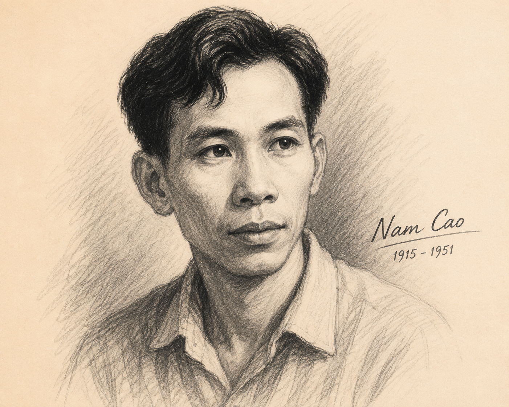
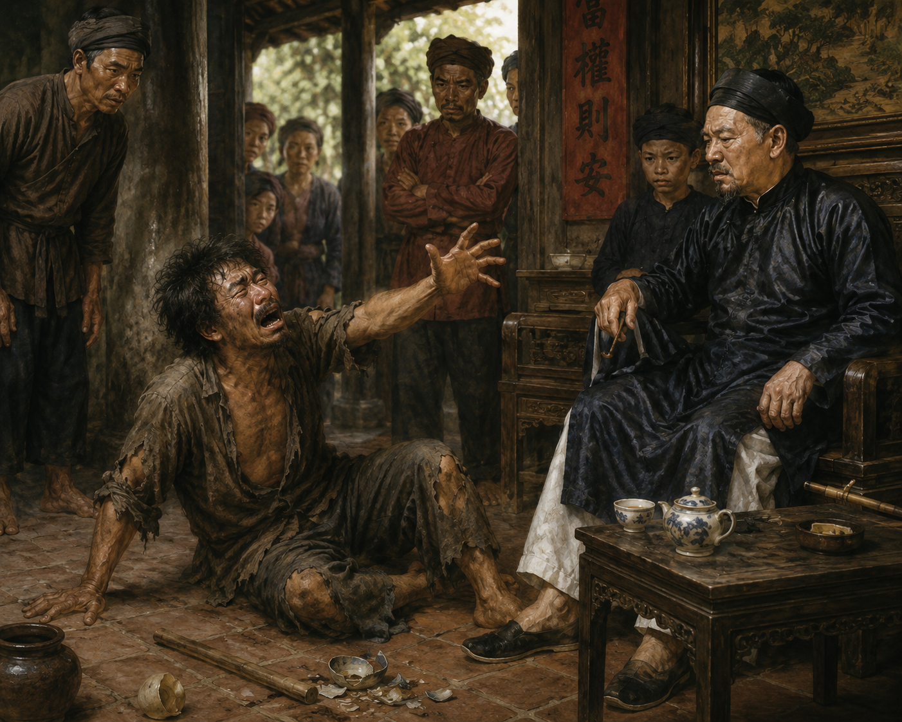

"Thế nào là định kiến xã hội? Các định kiến xã hội có thể ảnh hưởng đến cá nhân và cộng đồng như thế nào? Có thể bạn đã từng nghe thấy người ta gọi tính cách hay cách ứng xử của một ai đó là 'Chí Phèo'. Cách gọi ấy đã hàm ẩn sự đánh giá như thế nào đối với tính cách hay cách ứng xử này?"
Tên khai sinh: Trần Hữu Tri (Trần Hữu Trí), quê ở làng Đại Hoàng, tỉnh Hà Nam.
Đề tài sáng tác: Xoay quay quanh đời sống cơ cực của người nông dân và bi kịch của tầng lớp trí thức nghèo trước Cách mạng tháng Tám.
Phong cách nghệ thuật: Đạt đỉnh cao của chủ nghĩa hiện thực: giàu tính khái quát triết lý, phân tích tâm lý nhân vật sâu sắc, nghệ thuật tự sự linh hoạt với sự phối hợp nhiều điểm nhìn và giọng điệu.

Hình 1 (h1.png): Nhà văn Nam CaoLịch sử đổi tên tác phẩm:
Chí Phèo xuất hiện với tiếng chửi luân phiên: Chửi trời $\rightarrow$ Chửi đời $\rightarrow$ Chửi làng Vũ Đại $\rightarrow$ Chửi ai không chửi nhau với hắn $\rightarrow$ Chửi đứa chết mẹ nào đẻ ra thân hắn.
Chú ý sự luân phiên của các điểm nhìn (điểm nhìn của người kể chuyện và nhân vật, điểm nhìn bên ngoài và bên trong)?
Ngoại hình biến dạng: Đầu trọc lốc, răng cạo trắng hớn, mặt đen và cơng cơng, mắt gườm gườm, ngực chạm trổ rồng phượng.
Hành vi: Uống rượu say, đập chai ăn vạ ở nhà Bá Kiến. Tuy nhiên Bá Kiến bằng bản lĩnh cáo già đã dùng chiêu "mềm nắn rắn buông", biến Chí Phèo thành tay sai đắc lực.

Hình 2 (h2.png): Cảnh ăn vạ tại nhà Bá KiếnChú ý những chi tiết miêu tả cách "ứng phó" của Bá Kiến đối với Chí Phèo và người nhà của mình?
Lòng trắc ẩn của Thị Nở dành cho Chí Phèo được thể hiện qua ý nghĩ và hành động nào?
Bà cô Thị Nở đại diện cho định kiến xã hội khắt khe ngăn cản mối tình. Chí Phèo rơi vào bi kịch tuyệt vọng tuyệt đối.
Hắn uống rượu nhưng "càng uống lại càng tỉnh", hơi cháo hành thoang thoảng làm hắn khóc rưng rức. Chí Phèo cầm dao đến nhà Bá Kiến dõng dạc đòi quyền làm người:
"Tao muốn làm người lương thiện!... Ai cho tao lương thiện? Làm thế nào cho mất được những vết mảnh chai trên mặt này?"
Kết cục: Chí Phèo đâm chết Bá Kiến rồi tự sát ngay trên đũng máu tươi. Đó là cái chết tự phát nhưng thể hiện sự bế tắc tận cùng của người nông dân trước Cách mạng.
Ý nghĩa của hình ảnh "Cái lò gạch cũ" ở cuối tác phẩm là gì?
Đặc trưng nghệ thuật tự sự Nam Cao là khả năng thâm nhập vào nội tâm nhân vật, tạo ra ngôn ngữ nửa trực tiếp hòa lẫn giữa lời người kể chuyện và lời nhân vật.
Nhà văn Lê Văn Trương từng đổi tên truyện thành "Đôi lứa xứng đôi" nhằm giật gân, thương mại hóa câu chuyện tình giữa hai con người xấu xí vô hình.
Vận dụng tri thức về dịch chuyển điểm nhìn trần thuật để phân tích các truyện ngắn hiện thực cùng thời như Lão Hạc (Nam Cao) hay Tắt đèn (Ngô Tất Tố).
| Phương diện | Đặc điểm biểu hiện | Tác dụng nghệ thuật |
|---|---|---|
| Người kể chuyện | Ngôi thứ ba giấu mặt, linh hoạt hóa thân | Tạo tính khách quan nhưng chân thực sâu sắc |
| Điểm nhìn | Dịch chuyển từ bên ngoài vào bên trong tâm lý | Khám phá bi kịch nội tâm giằng xé của nhân vật |
| Giọng điệu | Đa thanh: Lạnh lùng bên ngoài, ấm áp xót thương bên trong | Thể hiện tư tưởng nhân đạo sâu sắc của nhà văn |
Hãy chọn đáp án đúng nhất cho 10 câu hỏi dưới đây!
Yêu cầu: Tóm tắt hiệu quả của lối trần thuật xáo trộn thời gian trong đoạn mở đầu Chí Phèo (Chí Phèo hiện tại say khước $\rightarrow$ Lùi lại quá khứ lai lịch $\rightarrow$ Hiện tại đi tù về).
Lời giải chi tiết:
Yêu cầu: Viết đoạn văn ngắn trình bày suy nghĩ của bạn về chi tiết bát cháo hành của Thị Nở trong truyện ngắn Chí Phèo.
Đoạn văn tham khảo mẫu:
Trong truyện ngắn Chí Phèo của Nam Cao, bát cháo hành của Thị Nở là một chi tiết nghệ thuật giàu giá trị biểu tượng. Đây là lần đầu tiên Chí Phèo được nhận chăm sóc từ một bàn tay phụ nữ mà không phải đoạt cướp hay dọa nạt. Bát cháo hành nóng hổi không chỉ giúp Chí Phèo giải cảm về mặt sinh lý mà quan trọng hơn đã thức tỉnh tình người và khao khát lương thiện bị vùi lấp bấy lâu. Món ăn giản dị ấy chính là biểu tượng của tình thương sơ khai, là cầu nối giữa Chí Phèo với thế giới của những con người bình thường. Qua chi tiết này, Nam Cao khẳng định niềm tin bất diệt vào bản chất tốt đẹp của con người: Tình thương chân thành có sức mạnh thức tỉnh và chữa lành mọi bi kịch.
Yêu cầu: Chỉ ra điểm giống và khác nhau trong kết thúc của hai tác phẩm hiện thực nổi tiếng.
Lời giải chi tiết:
Giống nhau: Đều phản ánh chân thực số phận bi kịch của người nông dân Việt Nam nghèo khổ, thể hiện tinh thần nhân đạo sâu sắc của nhà văn.
Khác nhau: